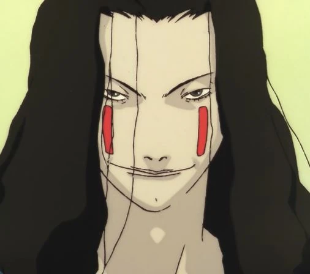

Description
Masami is the key designer of Protocol 7 which evolved the Wired.
While working for Tachibana General Laboratories, he illicitly
included codes, his own memory, enabling him to control the whole
protocol at will and embedded his own mind and will into the
seventh protocol. Because of this, he was fired by Tachibana
General Laboratories, and was found dead not long after.
Becoming a conscientious virtual entity in the Wired able to
distribute information in it, he founded the Knights that would
become his worshipers making him a God.
Personality
Masami believes that the only way for humans to evolve even further and develop even greater abilities is to absolve themselves of their physical and human limitations, and to live as virtual entities—or avatars—in the Wired for eternity. He can be described as cunning, ambitious, determined, and slightly egotistic. All his planning and creations are an obvious result of his intelligence and skills. (Ironically or unironically,) Masami may also seem to have a god complex.
Name: Eiri Masami
Description
- Gender: Male
- Age: 30s
- Birthday: March 21
- Personality: ENTJ - 3w4
- Occupation: God?